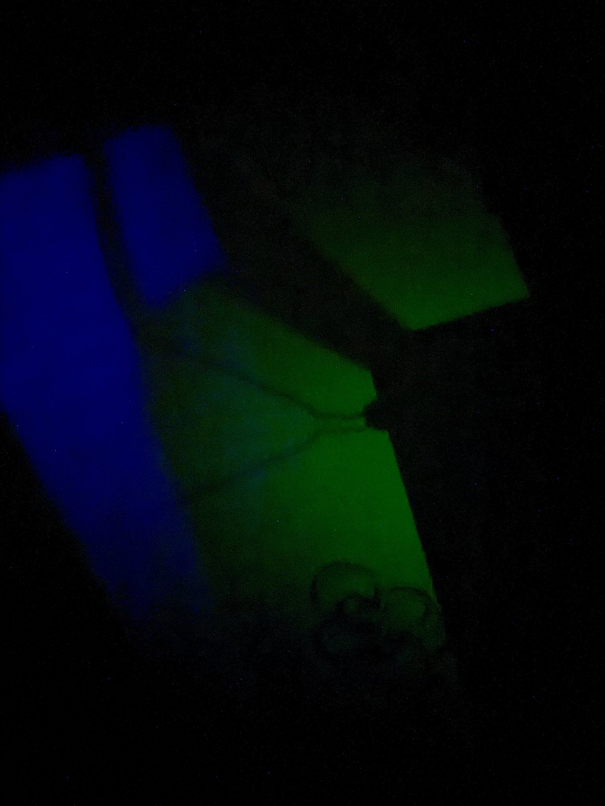

炽烈已极
@AnIncandescence
半梦半醒看到红色的菌丝爬满了房间
关灯后全黑的视野一闪一闪，，出现一些记忆里没有的画面，似乎是动漫的
天花板上的阴影有时候自发想象成树，有时是人脸，但并不恐怖，是柔和的女性面部轮廓
不集中注意力的话会双视，也很难打字
闭眼看到的所有东西都加上了霓虹灯样的高亮轮廓，很刺眼

炽烈已极
@AnIncandescence
300mg普瑞巴林和10mg巴氯芬，外幻就像飘浮在空气中的油膜，彩色的，淡淡的。
在泡泡里🫧
就像画的背景一样👇 https://t.co/kaONKvCdF5